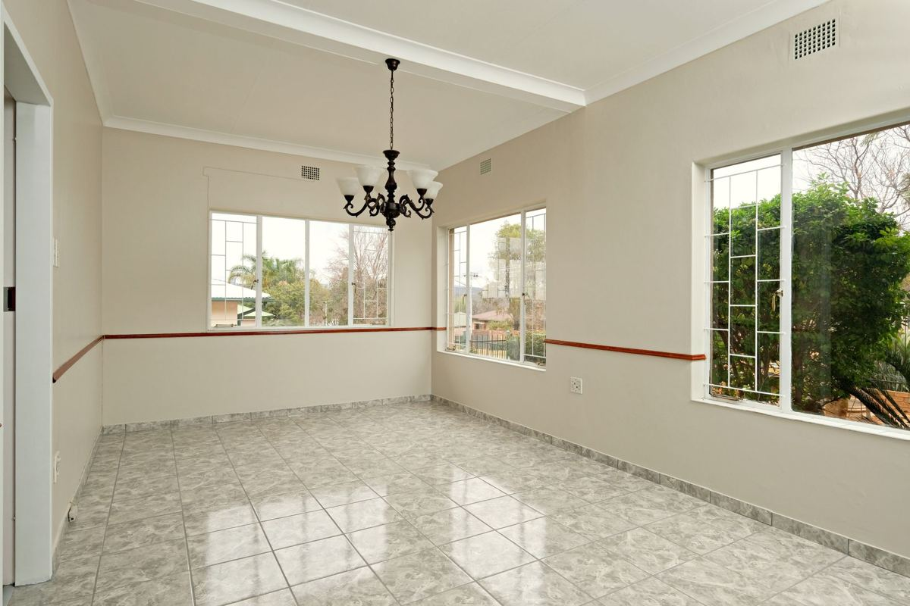

The house is here and you are not. A cleanout still runs, and it runs on three things: a way in, someone with the authority to approve the work, and a written list of what stays. We quote from photos or a video walkthrough, confirm the list before the crew starts, and send photos of every room when it is empty.

Most of these calls come from adult children handling a parent's house, from people who moved for work and kept the old place too long, and from owners who inherited a property two states away. The work itself is ordinary. The coordination is the part that goes wrong.
Getting in
Nothing happens without access, and a remote job is where that falls apart. The options that actually work, in order of how well they hold up:
- A lockbox on the front door with a code you give us the morning of the job
- A neighbor, relative or friend who can open the house and lock it after
- A real estate agent or property manager already holding a key
- Someone flying in for the day, which is the most expensive way to solve it
A garage code alone is usually not enough, because an interior door from the garage is often the one that stays deadbolted. Tell us which door opens and whether an alarm is armed. If there is a security system, either disarm it remotely or give the code to whoever is letting the crew in, because an alarm call to a house nobody lives in turns into a police response.
Confirm the utilities are on. A closed-up house with the power cut means no lights in a hallway, no lights in a garage, and a crew working an interior stairwell by flashlight. Water matters too if the job ends with a floor that needs mopping.
Who is allowed to say yes
This is the part we are careful about, and it is worth being clear. We take direction from the person who owns the property or who has legal authority over it. If you are the owner, that is you, from wherever you are. If the owner has died, that authority usually sits with the executor or administrator of the estate. If the owner is alive but cannot handle it, that is often an agent under a power of attorney.
We are not the ones to tell you which of those applies. The Texas State Law Library publishes a plain-language guide on powers of attorney that is a reasonable starting point, and anything past that is a question for a lawyer. What matters on our side is simple: one person authorizes the job, and if a sibling or a tenant tells our crew something different on the day, the work stops until the person who hired us says otherwise. That rule protects you more than it protects us.
If the house is part of an estate that has not finished, clearing an inherited house you are keeping covers the slower version of this, where nothing forces a date.
The keep list is the whole job
When you are standing in the house, you point and we carry. When you are in another state, the pointing has to happen in advance and in writing.
Send a list, room by room, of what stays. Be specific and be physical: "the cedar chest in the front bedroom closet," not "sentimental items." Anything not on the list is treated as going, and that cuts both ways. The most common problem on a remote job is not that we took too little. It is that a box of paperwork nobody flagged went out with the rest.
Two things deserve their own pass before anyone schedules a crew. The first is paper: tax records, titles, deeds, insurance policies, military discharge papers, photographs. Someone should go through the filing cabinet and the desk in person, or ship the contents unopened to you. That is not a job to hand to a hauling crew.
The second is anything you suspect is worth something, whether that is tools, instruments, jewelry, coins or older furniture. We are haulers, not appraisers, and we will not guess. If you want an opinion on value, that happens before we are on the calendar. After the estate sale, what is left in the house covers what a sale company typically takes and what it leaves behind.
Safes are a hard stop. We will move or remove one, but we do not open one and we do not haul one whose contents are unknown.
Photos before, photos after
A remote cleanout is only as good as its record. Before the job, we want photos or a short video walkthrough of every room, the garage, the attic hatch and the yard. That is what we quote from, and it is also what keeps the number from moving on the day.
After the job, the crew sends photos of every space empty. For most people out of state, that set of photos is the only proof the work happened the way it was described, and it is what gets forwarded to a sibling, an agent or an estate attorney. We send it as a matter of course.
What still has to be handled from there
Some things do not travel well over the phone, and it is better to know that up front than to discover it after the trailer is gone.
Household hazardous waste is the main one. Paint, gasoline, motor oil, pool chemicals, fertilizer and old pesticides stay behind, and they go to the city's collection program rather than on our trailer. Plano runs a household chemical collection program and the TCEQ keeps a statewide overview of household hazardous waste that also covers used motor oil. That material needs a person to drive it somewhere, so a neighbor or the person with the key usually ends up handling it.
Mail is the other one. If the house is going to sit empty or sell, USPS mail forwarding is worth setting up before the cleanout rather than after, because a stack of mail in an empty house is a problem that grows on its own.
How the job runs
Send photos or a video walkthrough and tell us the city. A crew looks at what is going and you get a firm number before anything is lifted. The quote is the bill, and disposal is included. Payment does not require you to be here.
Our own crews go inside the house, which is the reason this works remotely at all. You are trusting people in an empty property with nobody watching, and that is not something to hand to labor hired off an app that morning. The service page for this work is estate cleanouts, and we cover the northern suburbs including Frisco, Plano, McKinney and Allen, seven days a week. Time zones are not a problem. You can send us the walkthrough whenever you are ready, and there is no rush on our end.
Frequently asked questions
Do I have to be there for the cleanout?
No. We need a way in, one person with authority to approve the work, and a written list of what stays. Most remote jobs run entirely on photos and phone calls.
How do you quote a job you have not seen?
From photos or a video walkthrough of every room, the garage and the attic. The crew confirms the number in person before anything is lifted, so there is no surprise at the end.
What if a family member says something different on the day?
The work stops until the person who hired us confirms. One person authorizes the job, and we do not take new instructions from someone else on site.
Will you go through paperwork or set aside valuables?
No. Flag those before we schedule and have someone handle them. We are haulers, not appraisers, and we will not guess at what matters.
How do I know the house is actually empty?
The crew photographs every room once it is clear and sends the set to you the same day.
A cleanout from out of state takes more arranging up front, and once the crew is in the driveway it runs like any other. The rest of what we haul is on the services page.